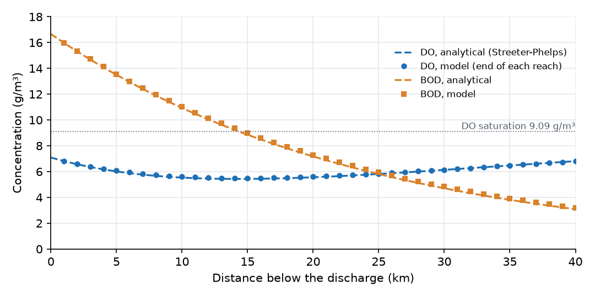
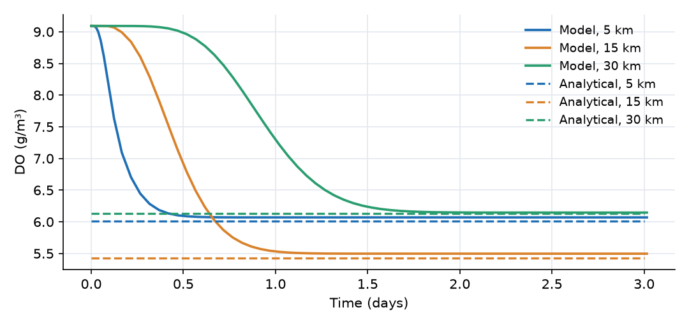
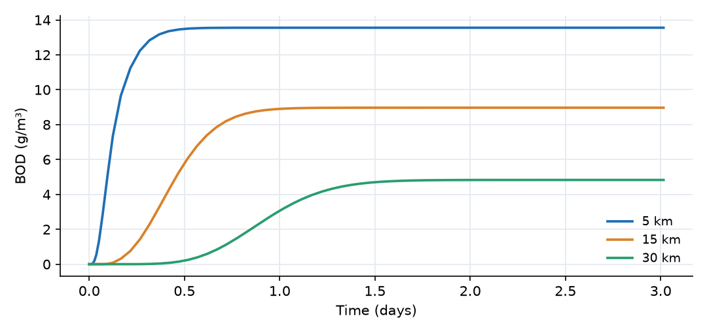

What this model represents
A wastewater treatment plant discharges into a river. Just below the outfall the effluent and the river water are fully mixed: the mixture carries 16.66 g/m³ of ultimate BOD and 7.09 g/m³ of dissolved oxygen, against a saturation value of 9.09 g/m³. As the water travels downstream, bacteria oxidize the BOD and draw down the oxygen, while oxygen enters from the atmosphere at a rate proportional to the deficit. Early on, consumption wins and DO falls; further downstream the BOD is depleted, reaeration wins and DO recovers. The low point is the critical point, and its DO is what water-quality standards are checked against.
Streeter and Phelps (1925) solved this problem analytically for steady, plug-flow conditions. This model solves the same processes with OpenHydroQual's channel hydraulics and reaction engine, and the README compares the two. The same setup can be extended to what the analytical solution cannot handle: varying flow, several outfalls, tributaries, or temperature-dependent rates.
How it works
Hydraulics. Each reach is a Trapezoidal Channel Segment. Its depth follows from its stored volume S and length ℓ:
depth = (−b + √(b² + 4·z·S/ℓ)) / (2·z)
with base width b = 10 m and side slope z = 2. The links between reaches compute Manning flow from the water-surface slope:
Q = (1/n) · A · R^(2/3) · sqt((h_up − h_down)/ℓ)
where A is the cross-sectional area of the upstream reach, R = A/P is the hydraulic radius using the mean wetted perimeter of the two reaches, and h is the water-surface elevation. OpenHydroQual's _sqt is a regularized square root, sqt(x) = √(x²/(|x| + 0.0001)), which keeps the derivative finite as the slope approaches zero. At this river's slope of 0.0002 it returns 82% of the exact square root, so the flowing depth is 1.39 m (the unregularized Manning equation would give 1.24 m). At 6.25 m³/s the mean velocity is U = 0.351 m/s, or 30.3 km/day, and water takes 1.3 days to travel the 40 km.
Water quality. Three reactions act in every reach. OpenHydroQual multiplies each rate by the reach volume and by the stoichiometric coefficients:
| Reaction | Rate | ν for BOD | ν for DO |
|---|---|---|---|
| BOD_oxidation | k_d·BOD | −1 | −1 |
| BOD_settling | k_s·BOD | −1 | 0 |
| Reaeration | k_a·(DO_sat − DO) | 0 | +1 |
so that in each reach
d(V·BOD)/dt = Q·(BOD_in − BOD) − V·(k_d + k_s)·BOD d(V·DO)/dt = Q·(DO_in − DO) − V·k_d·BOD + V·k_a·(DO_sat − DO)
with k_d = 0.764, k_s = 0.514 and k_a = 1.902 per day. Reaeration is written as a reaction here; the atmospheric exchange source in the mass_transfer plugin computes the same flux, Storage·k·(saturation − concentration). The rates are fixed at their 20 °C values. The reaeration constant is an input; for reference, the O'Connor-Dobbins formula 3.93·U^0.5/H^1.5 (U in m/s, H in m) gives 1.4 per day for this depth and velocity.
Analytical solution. For steady plug flow the travel time to distance x is t = x/U. With k_r = k_d + k_s = 1.278 per day for total BOD removal and D = DO_sat − DO the oxygen deficit:
BOD(t) = L₀ · e^(−k_r·t) D(t) = k_d·L₀/(k_a − k_r) · (e^(−k_r·t) − e^(−k_a·t)) + D₀ · e^(−k_a·t)
with L₀ = 16.66 g/m³ and D₀ = 9.092 − 7.09 = 2.00 g/m³. The deficit is largest at
t_c = 1/(k_a − k_r) · ln[ (k_a/k_r) · (1 − D₀·(k_a − k_r)/(k_d·L₀)) ] = 0.472 day
which is 14.3 km downstream, where the analytical DO is 5.43 g/m³.
What to look for in the results
- Sag profile. The figure below shows the steady state at day 3, with the model value at the downstream end of each reach and the analytical curves. DO falls from 7.09 g/m³ at the outfall to a minimum of 5.50 g/m³ in Reach_15 (14 to 15 km), then recovers to 6.8 g/m³ at 40 km.

- Agreement. The model DO is 0.06 g/m³ above the analytical value at 5 and 15 km and 0.01 g/m³ above it at 30 km. BOD is 0.4% to 2.6% higher. The differences come from representing the river as 40 well-mixed reaches: each 1 km reach behaves like a small continuously stirred tank, which slightly slows the first-order decay compared with plug flow and smooths the profile. Shorter reaches reduce the difference.
- Settling matters. Settling removes 40% of the BOD (k_s/k_r = 0.514/1.278) without consuming oxygen in the water column. With the same total removal but all of it as oxidation (k_d = 1.278 per day), the sag would be much deeper.
- Travel time. In the time-series plots each location responds after the water from the outfall reaches it, then levels off at its steady value. The 30 km location reaches steady state after about 1.6 days.
Assumptions and limitations
- Flow, effluent load and temperature are constant. The model reaches steady state within 2 days; it can be driven with time-varying flow or concentrations by replacing the input files.
- The effluent is fully mixed with the river at the outfall. Lateral and vertical gradients are ignored.
- Only carbonaceous BOD is modeled. Nitrogenous oxygen demand (nitrification), sediment oxygen demand, photosynthesis and respiration are not included.
- Rate constants are constant along the river and not corrected for temperature. To add temperature dependence, link each reaction parameter to a temperature time series and set its Arrhenius factor (typically θ = 1.047 for k_d and 1.024 for k_a).
- Longitudinal dispersion is not specified (dispersivity 0); the reach-to-reach mixing of the 1 km cells acts as numerical dispersion.
- The input values (flow, mixed concentrations and rate constants) are illustrative and do not describe a particular river.
Model diagram
Hover a block or link to see its name and type. Arrows show the positive flow direction.
Components
Click a component to see every property set in the model file, with units and meaning.
Blocks 41
Storage compartments: each holds water (and dissolved or particulate mass) and has a state that evolves in time.
40 × Trapezoidal Channel SegmentTrapezoidal Channel Segment · open_channelForty river reaches, Reach_01 just below the discharge to Reach_40 at 40 km. Each is 1 km long, with a 10 m base width, side slopes of 2 horizontal to 1 vertical, Manning n = 0.035 and a bed that drops 0.2 m per reach (slope 0.0002). Each reach is a well-mixed storage cell. Reach_01 receives the mixed river and effluent flow from river_flow.txt with BOD = 16.66 g/m³ and DO = 7.09 g/m³.
river_flow.txt with BOD = 16.66 g/m³ and DO = 7.09 g/m³.Reach_01, Reach_02, Reach_03, Reach_04, Reach_05, Reach_06, Reach_07, Reach_08 …
Showing properties of Reach_01.
Trapezoidal Channel Segment: Trapezoidal Channel Segment
| Property | Value | Unit | Meaning |
|---|---|---|---|
| BOD: Concentration | 0 | g/m3 | Computed as mass/(Storage+0.00001) |
| BOD: Constant Inflow concentration | 16.66 | g/m3 | |
| DO: Concentration | 9.092 | g/m3 | Computed as mass/(Storage+0.00001) |
| DO: Constant Inflow concentration | 7.09 | g/m3 | |
| Manning's Roughness Coefficient | 0.035 | Roughness coefficient used in Manning's equation to estimate flow resistance. | |
| Area of agriculural land | 0 | m2 | |
| Base Width | 10 | m | The width of the bottom (flat) portion of the trapezoidal channel cross-section. |
| Bottom Elevation | -0 | m | Elevation of the channel bottom relative to the model’s vertical datum. |
| Obstacle height | 0 | m | The water depth below which the flow ceases |
| Initial Water Depth | 1.393 | m | Depth of water in the channel segment. If depth is initially unknown, it is estimated based on storage. |
| Inflow time series | river_flow.txt | m^3/day | |
| Inflow multiplier | 1 | Scales the inflow time series (for example an uncertain lateral inflow estimate). 1 uses the series as given. | |
| Segment length | 1000 | m | |
| Area of non-agriculural activity | 0 | m2 | |
| Side Slope | 2 | The horizontal to vertical ratio of the sloped sides (e.g., 2 means 2 horizontal to 1 vertical). |
DownstreamTrapezoidal Channel Segment (Imposed depth) · open_channelA reach below Reach_40 whose depth is imposed from downstream_depth.txt (1.393 m, the uniform-flow depth), so the river leaves the model without backwater. It absorbs everything that flows out; its own concentrations are not used.
downstream_depth.txt (1.393 m, the uniform-flow depth), so the river leaves the model without backwater. It absorbs everything that flows out; its own concentrations are not used.Trapezoidal Channel Segment (Imposed depth): Trapezoidal Channel Segment (Imposed Depth)
| Property | Value | Unit | Meaning |
|---|---|---|---|
| BOD: Concentration | 0 | g/m3 | Computed as mass/(Storage+0.00001) |
| DO: Concentration | 9.092 | g/m3 | Computed as mass/(Storage+0.00001) |
| Manning's Roughness Coefficient | 0.035 | Roughness coefficient used in Manning's equation to estimate flow resistance. | |
| Storage | 100000 | m3 | |
| Area of agriculural land | 0 | m2 | |
| Base Width | 10 | m | The width of the bottom (flat) portion of the trapezoidal channel cross-section. |
| Bottom Elevation | -8 | m | Elevation of the channel bottom relative to the model’s vertical datum. |
| Obstacle height | 0 | m | The water depth below which the flow ceases |
| Water Depth | downstream_depth.txt | m | |
| Segment length | 1000 | m | |
| Area of non-agriculural activity | 0 | m2 | |
| Side Slope | 2 | The horizontal to vertical ratio of the sloped sides (e.g., 2 means 2 horizontal to 1 vertical). |
Links 40
Connections that move water (and the mass it carries) between blocks.
40 × Trapezoidal_Channel_linkTrapezoidal_Channel_link · open_channelForty Manning links, Channel_01 to Channel_40, each carrying water from one reach to the next. Flow is driven by the water-surface slope; positive flow is downstream.
Channel_01, Channel_02, Channel_03, Channel_04, Channel_05, Channel_06, Channel_07, Channel_08 …
Showing properties of Channel_01.
Trapezoidal_Channel_link: Link from a channel segment to another
Constituents 2
Substances or particles carried by the water.
BODConstituentUltimate carbonaceous biochemical oxygen demand (g/m³ of O₂ equivalent).
Constituent: Chemical constituent
| Property | Value | Unit | Meaning |
|---|---|---|---|
| Concentration | 0 | g/m3 | Computed as mass/(Storage+0.00001) |
| Constant Inflow concentration | 0 | g/m3 | |
| Diffusion Coefficient | 0 | m2/day | |
| Dispersivity | 0 | m | |
| Stoichiometric Constant | 0 |
DOConstituentDissolved oxygen (g/m³). Starts at saturation in all reaches.
Constituent: Chemical constituent
| Property | Value | Unit | Meaning |
|---|---|---|---|
| Concentration | 0 | g/m3 | Computed as mass/(Storage+0.00001) |
| Constant Inflow concentration | 0 | g/m3 | |
| Diffusion Coefficient | 0 | m2/day | |
| Dispersivity | 0 | m | |
| Stoichiometric Constant | 0 |
Reaction parameters 4
Named coefficients used in reaction rate expressions.
k_dReactionParameterDeoxygenation rate constant (1/day): the rate at which BOD is oxidized in the water column, consuming oxygen.
ReactionParameter: Reaction Parameter
| Property | Value | Unit | Meaning |
|---|---|---|---|
| Arrhenius temperature correction factor | 1 | ||
| Value | 0.764 | ||
| Reference Temperature | 20 |
k_sReactionParameterBOD settling rate constant (1/day): loss of particulate BOD to the bed, which removes BOD without consuming oxygen in the water.
ReactionParameter: Reaction Parameter
| Property | Value | Unit | Meaning |
|---|---|---|---|
| Arrhenius temperature correction factor | 1 | ||
| Value | 0.514 | ||
| Reference Temperature | 20 |
k_aReactionParameterReaeration rate constant (1/day).
ReactionParameter: Reaction Parameter
| Property | Value | Unit | Meaning |
|---|---|---|---|
| Arrhenius temperature correction factor | 1 | ||
| Value | 1.902 | ||
| Reference Temperature | 20 |
DO_satReactionParameterDissolved-oxygen saturation concentration (g/m³); 9.09 g/m³ corresponds to fresh water at 20 °C.
ReactionParameter: Reaction Parameter
| Property | Value | Unit | Meaning |
|---|---|---|---|
| Arrhenius temperature correction factor | 1 | ||
| Value | 9.092 | ||
| Reference Temperature | 20 |
Reactions 3
Transformations among constituents, each with a stoichiometry and a rate expression.
BOD_oxidationReactionOxidation of BOD, rate k_d·BOD. Removes one gram of DO per gram of BOD.
Reaction: Chemical reaction
(k_d*BOD)| Constituent | Stoichiometric coefficient |
|---|---|
| BOD | -1 |
| DO | -1 |
BOD_settlingReactionSettling of BOD, rate k_s·BOD. Removes BOD only.
Reaction: Chemical reaction
(k_s*BOD)| Constituent | Stoichiometric coefficient |
|---|---|
| BOD | -1 |
ReaerationReactionOxygen transfer from the atmosphere, rate k_a·(DO_sat − DO). Adds DO when the water is below saturation.
Reaction: Chemical reaction
(k_a*(DO_sat-DO))| Constituent | Stoichiometric coefficient |
|---|---|
| DO | 1 |
Input files
river_flow.txt | River flow below the outfall (m³/day) versus time (days): a constant 540 000 m³/day (6.25 m³/s), the combined upstream flow and effluent. |
downstream_depth.txt | Water depth imposed at the downstream boundary (m) versus time (days): a constant 1.393 m. |
analytical_do_5km.csv | Analytical steady DO 5 km below the discharge (g/m³), drawn as a horizontal line over the run. Not read by the model. |
analytical_do_15km.csv | Analytical steady DO 15 km below the discharge, near the critical point. |
analytical_do_30km.csv | Analytical steady DO 30 km below the discharge. |
Simulation settings
| Start time | 0 |
| End time | 3 |
| Initial time step | 0.001 |
| Write interval (steps) | 10 |
Results
Produced by running the downloaded model unchanged.

